стэш

архив старого интернета. место, в котором собраны артефакты прошлого: сайты, культовые моменты, интерфейсы, игры, гифки, мемы и многое другое. мы собираем фрагменты прошлого и создаем из них портал в мир забытого интернета, чтобы вспомнить, какой была сеть до фильтров, алгоритмов и перенасыщения контентом, и чтобы немного заглянуть туда, куда уже не заходят
Алина
Элина
Соня


 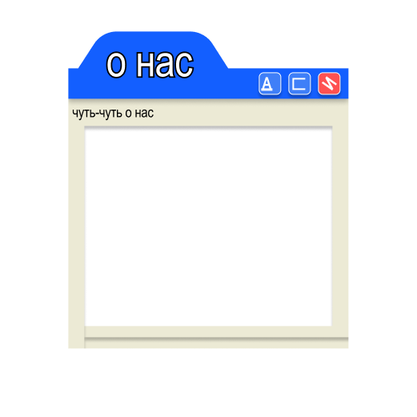 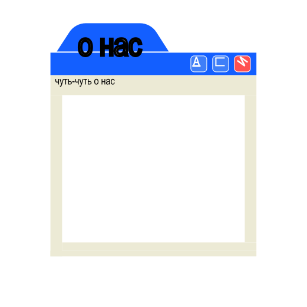 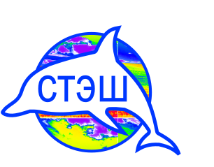 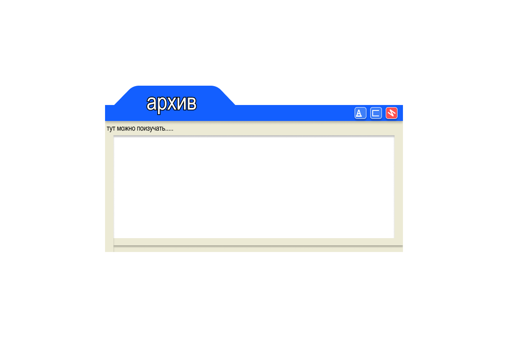 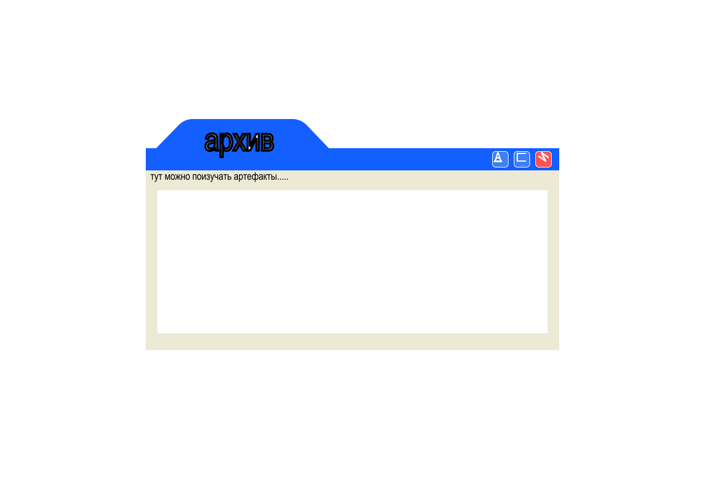 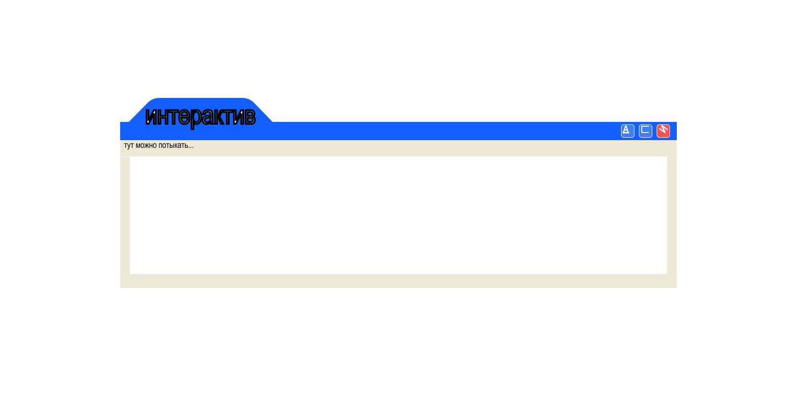 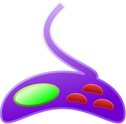
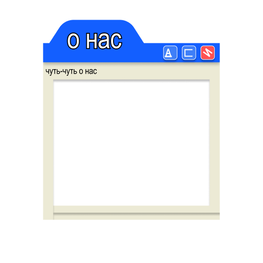 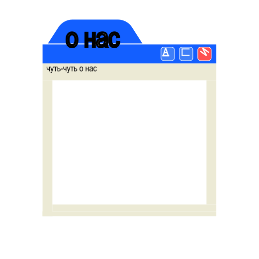 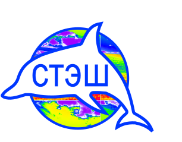 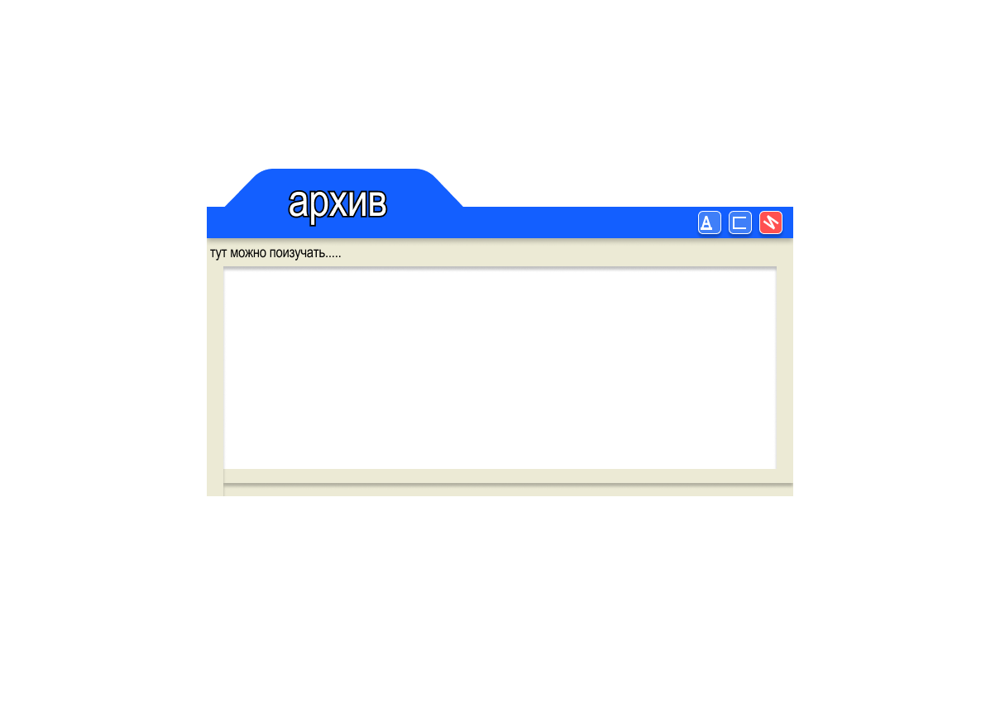 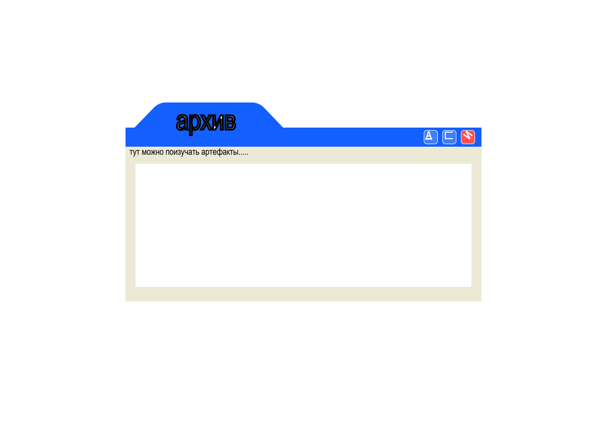 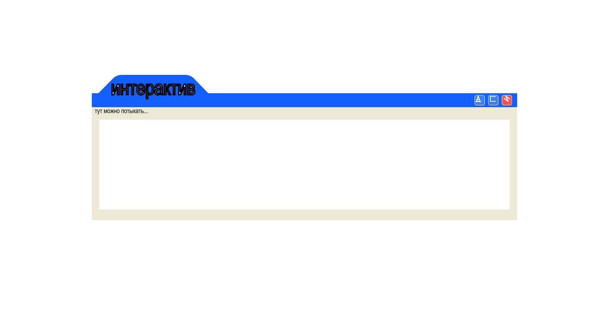 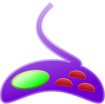  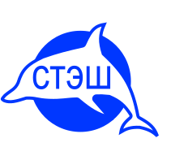
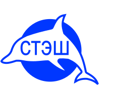